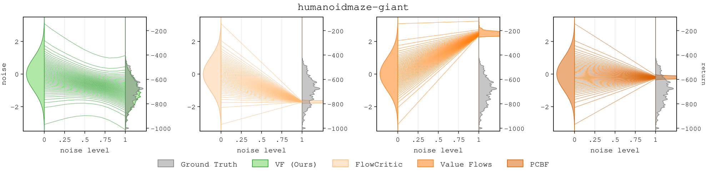
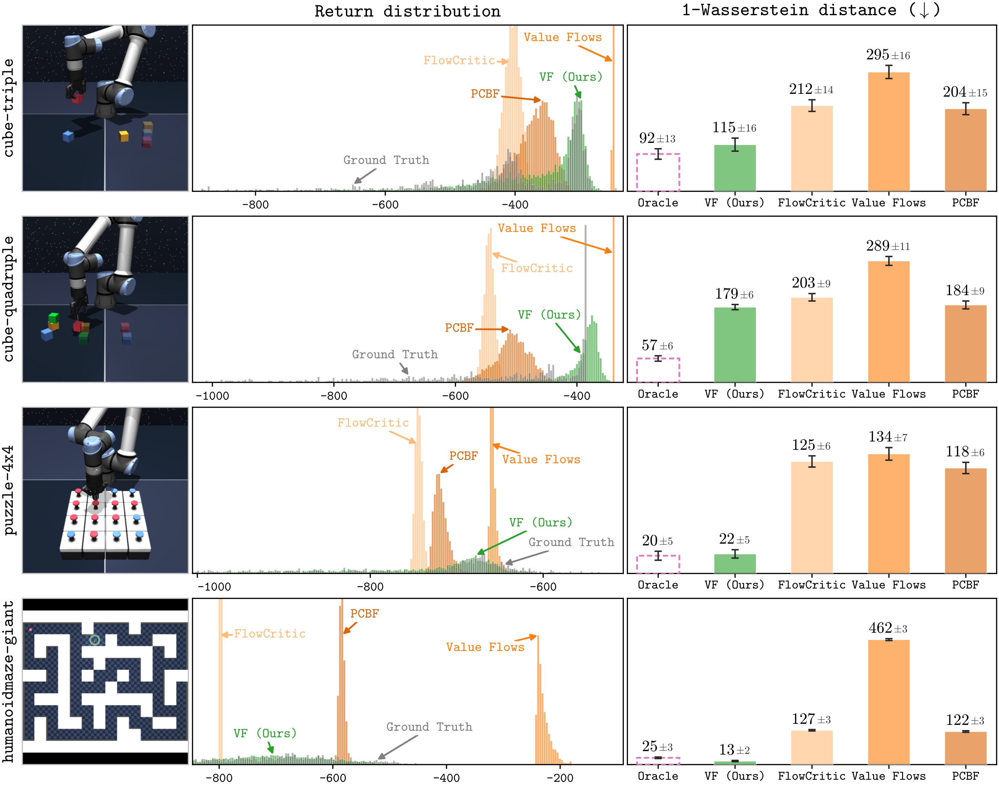
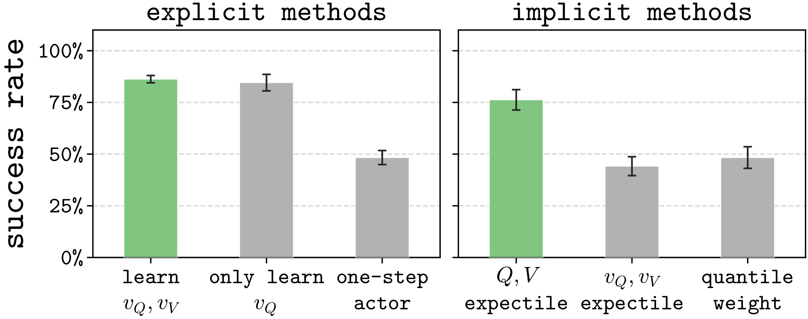
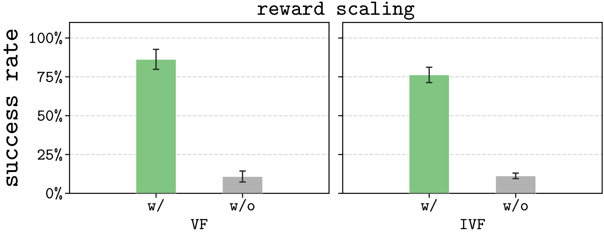

Endpoint-only
supervision
Build Bellman targets from clean returns (\(\tau = 1\)). They train the flow at other noise levels, but do not enforce a Bellman equation there.
Value Forcing learns return distributions with flow matching. It enforces Bellman consistency at every noise level to learn more accurate return distributions. Across 26 offline RL tasks, Value Forcing improves policy performance, with the largest gains when data is limited.
Value learning lies at the heart of reinforcement learning (RL), yet accurately estimating the value can be hard: each transition provides only an immediate reward, but no ground-truth returns. Thus, errors from temporal-difference (TD) learning are hard to correct when data is limited or rewards are sparse.
How can we get richer learning signals from each transition?
Distributional RL models the full return distribution and can provide richer learning signals when the whole return distribution is used as the TD target. Recent work has begun to use Flow Matching to represent the return distribution. These methods map Gaussian noise to the return distribution through an iterative denoising process, creating an opportunity to enforce Bellman consistency at every noise level and extract more learning signals from the same data. Prior flow-based methods, however, supervise only some noise levels or use incorrect targets, and can learn inaccurate return distributions that collapse toward a single value (see the rightmost figure above).
A flow-based critic turns Gaussian noise into a return sample. Ideally, the Bellman equation should hold at each of the intermediate noise levels. Prior methods differ in where along the flow path they enforce this consistency, and each misses or misapplies it at some noise levels:
Build Bellman targets from clean returns (\(\tau = 1\)). They train the flow at other noise levels, but do not enforce a Bellman equation there.
Uses the clean-return Bellman equation at every noise level. At \(\tau = 0\), this conflicts with the initial Gaussian noise.
Pairs flow paths with the same initial noise, rather than enforcing Bellman consistency for individual flow paths.
In our experiments, these methods can predict inaccurate distributions that concentrate near a single value:

Ground Truth VF (Ours) FlowCritic Value Flows PCBF
See Fig. 7 in the paper for complete results.
Value Forcing uses the return distribution at the next state to bootstrap the return distribution at the current state using the same noise level. We first define a new flow Bellman equation, then turn it into flow-matching losses and two offline RL algorithms: VF and IVF.
The standard distributional Bellman equation relates the return random variables at the current state \( Z^\pi(s,a) \) and at the next state \( Z^\pi(S', A') \):
Our flow Bellman equation extends this relation to every noise level \(\tau \in [0,1]\). It scales the reward by \(\tau\) and adds an independent Gaussian correction \(N \sim \mathcal{N}(0,1)\):
The Gaussian correction accounts for the variance in the discounted return at the next time step. We can understand this by examining the equation at the two ends of the flow path.
At \(\tau = 0\) initial noise
Discounting reduces the initial noise variance to \(\gamma^2\). The independent correction adds \(1-\gamma^2\), keeping both sides standard Gaussian.
At \(\tau = 1\) clean returns
The correction disappears, leaving the standard distributional Bellman equation.
In fact, the flow Bellman operator admits Bellman consistency at all intermediate noise levels: we have a unique fixed point at every noise level.
We learn two return flows separately: a V-flow conditioned on the state, and a Q-flow conditioned on the state and action. Their noisy returns satisfy:
Each flow has a velocity network that moves noisy samples toward clean returns. The V-velocity learns from the Q-velocity at the current state. The Q-velocity learns from the V-velocity at the next state, using the flow Bellman equation at the same noise level. We use Lemma 1 in the paper to derive the corresponding flow-matching losses.
Here \(z^\tau\sim p_Q(z^\tau\mid s,a,\tau)\) and \(z^\tau\sim p_V(z^\tau\mid s',\tau)\) denote samples from the noisy Q- and V-return distributions.
We alternate between updating V- and Q-velocity networks.
Reward scaling. We multiply rewards by \((1-\gamma)\) to normalize the return scale. This substantially improves performance (see Ablations).
We consider two ways to instantiate offline RL algorithms using the value forcing losses. First, we can evaluate the return distribution of an explicit policy and then perform policy improvement: VF (explicit method). Second, we can learn return distributions through an expectile-weighted flow matching objective without an explicit actor: IVF (implicit method). Both algorithms use Eq. (2) to learn the Q-velocity but differ in how they learn the V-velocity.
Explicit actor-critic
We define the explicit policy as performing rejection sampling on \(K\) actions proposed by a flow BC policy \(\pi_\beta\):
$$\pi(a \mid s) \overset{d}{=} \operatorname*{arg\,max}_{a_1,\,\dots,\,a_K:\ a_i \sim \pi_\beta(a \mid s)} Q(s, a_i),$$ where the Q-estimate is the expected return predicted by the Q-flow: $$Q(s,a) = \mathbb{E}_{z^0\sim\mathcal{N}(0,1)}\left[\int_0^1 v_Q(z^\tau\mid s,a,\tau)\,d\tau\right].$$ In practice, we integrate over \( M \) independent initial noises to approximate this expectation. VF uses this policy to train the V-velocity in Eq. (1).Implicit value learning
Following Kostrikov et al. (2022), we define the expectile weight with coefficient \(\mu \in [0.5,1)\) as:
$$\begin{aligned} w^\mu(s,a) &\triangleq \mu\,\mathbf{1}\big(Q(s,a) \ge V(s)\big) + (1-\mu)\,\mathbf{1}\big(Q(s,a) < V(s)\big), \end{aligned}$$ where \( V(s) \triangleq \mathbb{E}_{z^0 \sim \mathcal{N}(0, 1)} \left[ \int_0^1 v_V(z^\tau \mid s, \tau) d\tau \right]\) is the V-estimate. We then use the expectile weight to define a regression objective using actions in the dataset: $$\begin{aligned} \mathcal{L}^\mu(v_V) &= \mathbb{E}_{\textcolor{#2f8a4f}{\boldsymbol{a \sim D}}}\Big[w^\mu(s,a) \cdot \left( v_V(z^\tau \mid s,\tau) - v_Q(z^\tau \mid s,a,\tau) \right)^2 \Big]. \end{aligned}$$Algorithm 1 Value Forcing (VF) and Implicit Value Forcing (IVF)
Input: Dataset \(D\), discount \(\gamma\), expectile \(\mu\), number of action candidates \(K\), number of MC return samples \(M\).
We evaluate VF and IVF on 26 long-horizon, sparse-reward tasks: 20 from OGBench and 6 from OCBench. OGBench's play-style data comes from scripted policies pursuing random goals. OCBench uses near-expert demonstrations designed to emulate human-like demonstrations.
We evaluate a fixed policy on one sampled state from each OGBench domain, plotting the return histograms predicted by different methods and their \(1\)-Wasserstein distances to the ground truth.

We compare against prior explicit and implicit value-learning methods in an offline RL setting, experimenting with subsets of OGBench and OCBench datasets.
Success rate with 10% of the dataset, mean ± std over 4 seeds.
| Explicit methods | Implicit methods | ||||||||||||
|---|---|---|---|---|---|---|---|---|---|---|---|---|---|
| Task | Floq | FlowCritic | Value Flows | PCBF | C51 | IQN | QC | VF (Ours) | DIVL | Implicit C51 | Implicit IQN | BFN | IVF (Ours) |
Success rate with 25% of the dataset, mean ± std over 4 seeds.
| Explicit methods | Implicit methods | ||||||
|---|---|---|---|---|---|---|---|
| Task | Value Flows | C51 | QC | VF (Ours) | Implicit C51 | BFN | IVF (Ours) |


@article{zheng2026value,
title={Value Forcing: Aligning Return Distributions at All Noise Levels},
author={Zheng, Chongyi and Zhou, Zhiyuan and Li, Qiyang and Eysenbach, Benjamin and Levine, Sergey},
journal={arXiv preprint arXiv:TODO},
year={2026},
}